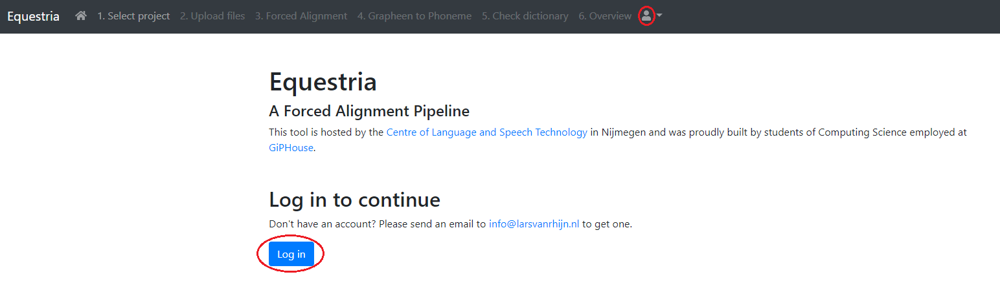
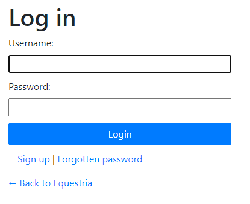
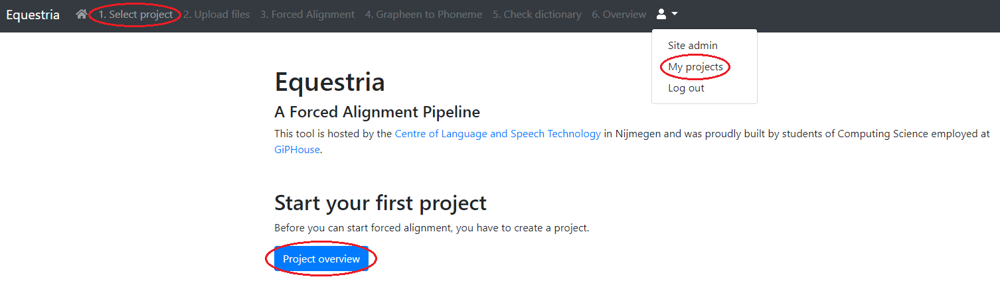
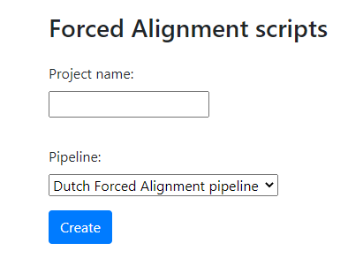
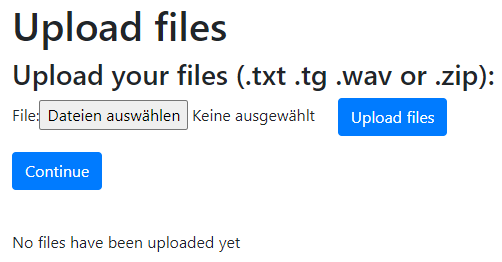
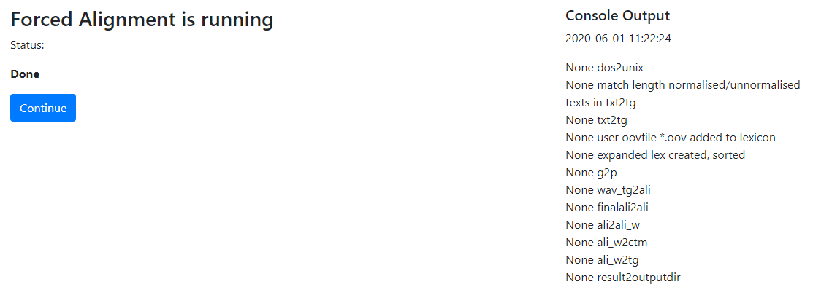
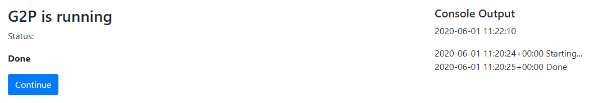
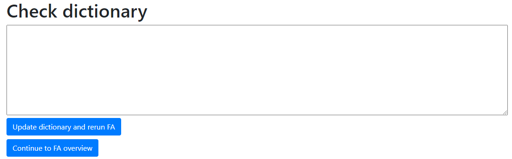
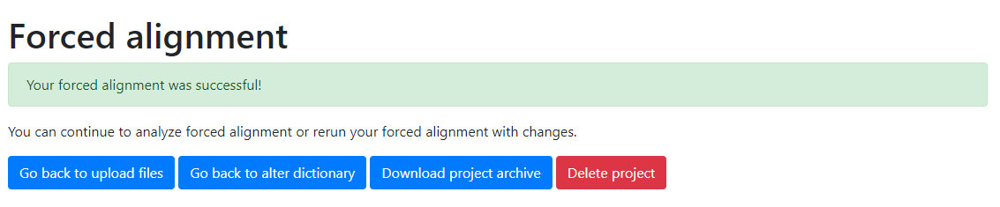

Before You can begin using it, You will need to log in. To do this press the “Log in” button on the home page, or the user icon in the top right.

You will then be prompted with the log in screen.

This form also offers functionality to register with a new account using the “Sign up” button, as well as resetting Your password in case You forgot is using the “Forgotten password” button.
Please note the requirements You have to fullfill when creating a new account as listed on the sign up page.
After logging in You should head over to the “Project Overview” page. This can be done by clicking the “Project overview” button, clicking the “Select Project” header in the navigation bar, or clicking the user icon and selecting the “My Projects” item.  Please note that You will not have the option “Site admin” in the dropdown menu.

In the project creation form, enter a project name You have not used before, also make sure to only use alphanumerical character, i. e. [a-z, A-Z, 0-9] and select an according pipeline. Upon clicking “Create” You will be redirected to the “Upload files” screen.
Here You can upload the files You want to work with within the project.

Mucho Importante: For each audio-text-combination You will have to create a separate project! You will need to upload both a text file and an audio file. Allowed file formats are .txt, .tg, .wav, or a zip archive containing the necessary files. Both files should have the same filename (except for the extension .txt, .tg, and .wav). Otherwise, while it will let You click “Continue”, correct output is not guaranteed. Once all files have been uploaded, click the “Continue” button to proceed.

After clicking the “Continue” button on the upload page, the forced alignment will automatically be run. It will show You the progress via console output on the right side and the current status on the left. Once it is done, click the “Continue” button.

This page works in very much the same way as Forced Alignment. Grapheen to phoneme will run automatically, once it is done, click the “Continue” button.

Here You can add words to the dictionary that is used during forced alignment and rerun it. The current version of the dictionary will also be displayed here. If You are satisfied with the current version of the dictionary just click on “Continue to FA Overview”. Otherwise alter the content in the textfield above and click on “Update dictionary and rerun FA”, so that the Forced Alignment can be done with the new version of the dictionary.

This is the final page of the forced alignemnt pipeline. Here You can repeat any of the previous steps, download the results, and delete the project if You are done. If the output does not match what You expected, You can go back to the check dictionary section to add words to it and rerun the forced alignment and grapheen to phoneem steps. You can also add more files via the upload fiels page.